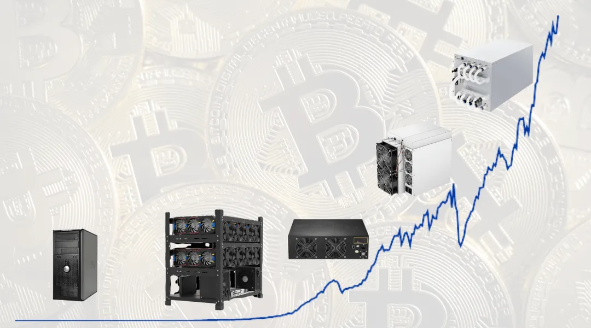
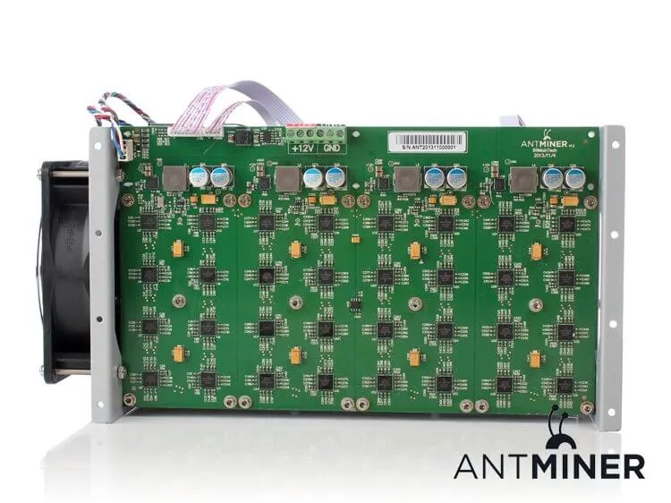
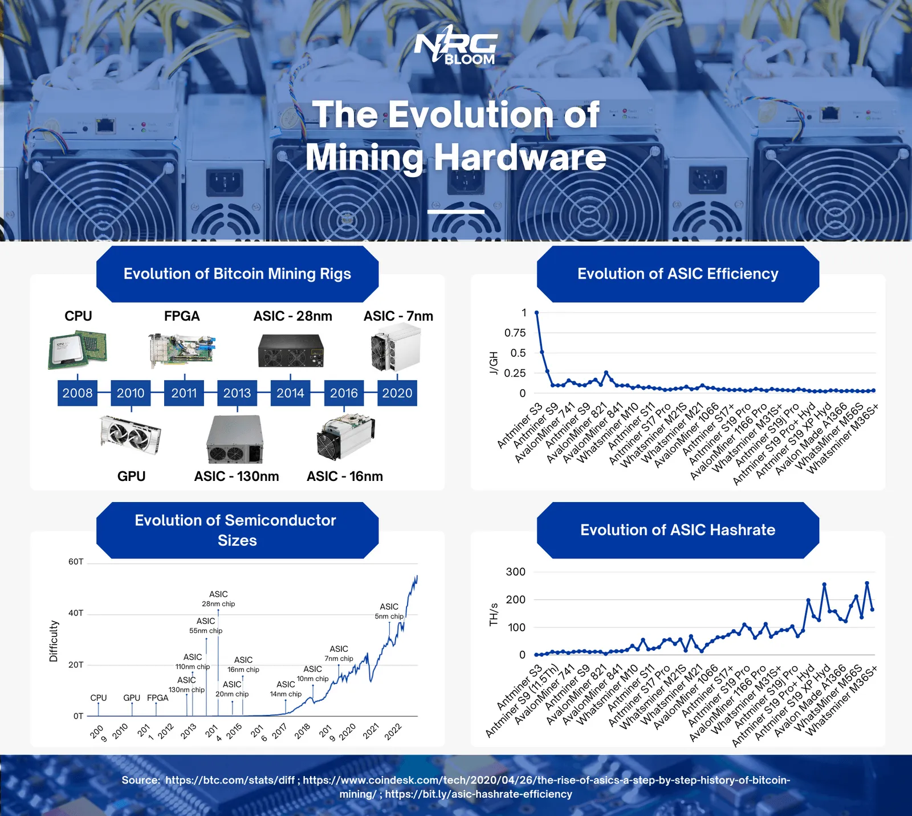

The Evolution Of Bitcoin Mining Hardware

The evolution of Bitcoin mining hardware has been a cornerstone in the development of cryptocurrency mining. Initially, mining Bitcoin was a straightforward task that could be performed on virtually any computer. This simplicity marked the early stages of Bitcoin mining hardware evolution, where basic CPUs were sufficient for mining operations. However, as Bitcoin's popularity surged, so did the complexity of the mining process. The Bitcoin mining hardware evolution is a testament to how this industry has transformed. Nowadays, to mine Bitcoin effectively, one needs specialized hardware that is highly efficient and possesses considerable computing power. Comparing the various generations of Bitcoin mining hardware highlights the advancements in technology, showcasing how newer models are far more capable and energy-efficient than their predecessors.
Table of Contents
- CPU Mining (2009 - 2010)
- GPU and FPGA Mining (2010-2013)
- ASICs (2012 - now) - What is ASIC Mining?
What is a Bitcoin Mining Rig?
During the initial stages of Bitcoin mining, basic computers equipped with central processing units (CPUs) sufficed for mining the initial blocks of the Bitcoin blockchain(1). CPUs, integral components on a motherboard, serve as the computational heart of a computer, capable of seamlessly transitioning between tasks owing to their inherent flexibility(2). Encompassing arithmetic logic units (ALUs), CPUs possess the capability to execute intricate operations and calculations, rendering them suitable for use in Bitcoin mining setups(3).
Leveraging specialized mining software compatible with SHA-256, early miners, including Satoshi Nakamoto, successfully engaged in Bitcoin mining during its inception. The relatively modest efficiency of CPU mining, achieving up to 8-20 KH/s in the most optimal CPUs(3), posed minimal concerns during this period. However, the surge in Bitcoin's popularity catalyzed intense competition within the mining sector, rendering CPUs obsolete for Bitcoin mining purposes.
CPU Mining (2009 - 2010)
During the initial stages of Bitcoin mining, basic computers equipped with central processing units (CPUs) sufficed for mining the initial blocks of the Bitcoin blockchain(28). CPUs, integral components on a motherboard, serve as the computational heart of a computer, capable of seamlessly transitioning between tasks owing to their inherent flexibility(29). Encompassing arithmetic logic units (ALUs), CPUs possess the capability to execute intricate operations and calculations, rendering them suitable for use in Bitcoin mining setups(30).
Leveraging specialized mining software compatible with SHA-256, early miners, including Satoshi Nakamoto, successfully engaged in Bitcoin mining during its inception. The relatively modest efficiency of CPU mining, achieving up to 8-20 KH/s in the most optimal CPUs(30), posed minimal concerns during this period. However, the surge in Bitcoin's popularity catalyzed intense competition within the mining sector, rendering CPUs obsolete for Bitcoin mining purposes.
GPU and FPGA Mining (2010-2013)
The first major innovation in Bitcoin mining hardware was the introduction of Graphics processing units or GPUs. GPUs constitute computer components primarily designed for rendering images and videos generated by the CPU. Unlike CPUs that execute tasks sequentially, GPUs boast numerous cores, enabling parallel task execution and simultaneous handling of a multitude of mathematical calculations(4).
GPUs can be categorized into two distinct types: dedicated GPUs and integrated GPUs. Integrated GPUs share computational resources with the CPU, whereas dedicated GPUs, also referred to as discrete GPUs, operate independently from the CPU, rendering them more potent. Consequently, during the period when GPUs were utilized for Bitcoin mining, dedicated GPUs garnered substantial popularity. Although superior in efficiency compared to CPUs, most GPUs' performance remains below the 200 MH/s mark(5), rendering them inefficient by contemporary standards.
Around 2011, a novel variant of Bitcoin mining rig gained prominence: the field programmable gate arrays (FPGAs). FPGAs represent an interconnected network of semiconductor devices that boast the distinctive capability of being reprogrammed to achieve desired functionality, achieved through the utilization of hardware description language (HDL) files. FPGAs demonstrated compatibility with Bitcoin mining by accommodating SHA256 processing, thus making them suitable contenders in the mining arena. Similarly to GPUs, FPGAs possess the competence to execute multiple tasks concurrently; however, their capacity extends to a significantly grander scale. Unlike GPUs, which serve a more generalized computing purpose, FPGAs are tailored to execute specific tasks or algorithms contingent on their programmed instructions(6). The synergy of these factors positioned FPGAs as a more efficient option, boasting, at the time, impressive hash rates such as 514.92 MH/s(7).
Let's now compare ASIC mining vs GPU mining.
ASICs (2012 - now)
In September 2012, a significant milestone emerged in the realm of mining rigs when Canaan Creative unveiled the Avalon, heralding the introduction of the first application-specific integrated circuit (ASIC) dedicated exclusively to bitcoin mining(8). While we previously alluded to an integral component of mining rigs, namely semiconductors, let's delve into this facet. Semiconductors, often referred to as "chips," encompass integrated circuits that house electronic circuits intricately designed on a small semiconductor material, commonly silicon(9). The acronym ASIC itself alludes to the concept; ASICs signify integrated circuits meticulously fashioned for a singular hash algorithm, such as Bitcoin mining rigs' hallmark algorithm, SHA-256. This specific design imparts ASICs with remarkable efficiency despite their limited adaptability.

Over the years, the market witnessed an inundation of ASICs, thereby intensifying competition and correspondingly, the mining difficulty. This dynamic propelled the relentless pursuit of superior efficiency in ASICs. Developers achieved this by crafting increasingly compact semiconductors. The miniaturization of semiconductors translates to shorter paths for electric current to traverse during calculations, enhancing the overall efficiency of ASICs(10). The trajectory of ASICs engineered for Bitcoin mining commenced with 130nm chip sizes, corresponding to hash rates of roughly 80GH/s(11). Subsequent iterations witnessed a reduction in size, culminating in 7nm and 5nm iterations as exemplified by the S19 Antminer series(12) accompanied by matching hashrates reaching up to 257TH/s(13).
A further stride in ASIC technology emerged with the advent of water-cooled ASICs. The prodigious exertions undertaken by ASICs, operating incessantly, usher in considerable heat generation. This thermal challenge ranks among the foremost predicaments for ASIC miners, as excessive heat can curtail miner efficiency, due to underclocking(14), and potentially inflict damage upon these mining rigs. Conventional ASICs demand diligent ventilation and cooling measures. However, a contemporary innovation takes the form of water-cooled ASICs, which integrate closed-loop water cooling systems comprising a blend of water and glycol. This innovative approach fosters a markedly more effective cooling environment, culminating in unprecedented performance through overclocking and exceptional temperature uniformity(15).

Conclusion
This article aimed to shed light on the evolution of Bitcoin mining hardware, including a detailed look into how bitcoin mining hardware works and the ASIC mining vs GPU debate.
References
- (1) https://www.linkedin.com/pulse/history-evolution-asic-miners-leo-l/
- (2) https://www.cdw.com/content/cdw/en/articles/hardware/cpu-vs-gpu.html#:~:text=The%20primary%20difference%20between%20a,based%20microprocessors%20in%20modern%20computer
- (3) https://www.g2.com/articles/cpu-mining
- (4) https://www.hp.com/my-en/shop/tech-takes/post/integrated-vs-dedicated-graphics-cards#:~:text=You%20need%20a%20dedicated%20GPU,with%20CPUs%20with%20integrated%20graphics
- (5) https://whattomine.com/gpus
- (6) https://www.raypcb.com/fpga-vs-gpu-vs-cpu/#:~:text=The%20first%20is%20its%20speed,more%20than%20an%20equivalent%20CPU.
- (7) https://www.sciencedirect.com/science/article/abs/pii/S0167926020300146#:~:text=The%20mining%20hash%20rate%20using,compared%20to%20the%20standard%20technique
- (8) https://bitcointalk.org/index.php?topic=110090.0
- (9) https://www.amd.com/en/technologies/introduction-to-semiconductors
- (10) https://cointelegraph.com/news/jack-dorsey-s-nano-bitcoin-mining-chip-heads-to-prototype
- (11) https://en.bitcoin.it/wiki/Mining_hardware_comparison
- (12) https://cointelegraph.com/news/canaans-new-5-nanometer-chips-to-escalate-asic-arms-race-with-bitmain
- (13) https://shop.bitmain.com/product/detail?pid=000202305192246285028Kx534wu0678
- (14) https://d-central.tech/the-impact-of-temperature-on-asic-miners-performance-and-repair/
- (15) https://jetcool.com/post/five-reasons-water-cooling-is-better-than-immersion-cooling/